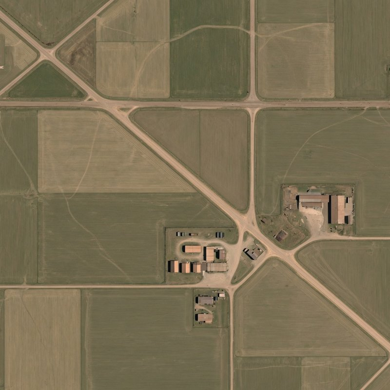
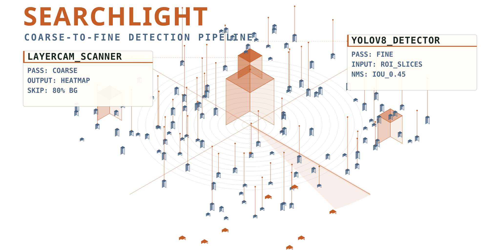
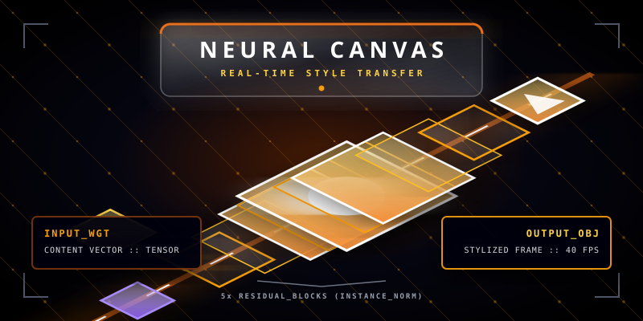

COARSE PASS — FULL FRAME
AI / ML ENGINEER
I ship PyTorch models to production — computer vision, generative systems, and the full stack around them. 4 production systems. Scroll to drill.
28.7041° N · 77.1025° E

SP-01 · Searchlight Protocol
Pipeline for small-object detection in high-resolution aerial imagery. Intelligently slices regions of interest, skipping 80%+ of empty background before fine inference.
View repository →

NC-03 · Neural Canvas
Feed-forward neural style transfer with perceptual loss via VGG-16 — shipped to Hugging Face with ONNX export.
View repository →PQ-02 · PixelQueue
React-Konva canvas, FastAPI, Celery workers, Redis broker, and PostgreSQL for human-in-the-loop vision pipelines.
View repository →{"id": 1042, "class": "car"}
| 1042 | car | 0.94 |
| 1041 | truck | 0.89 |

$ pygog "Schedule a meeting with the ML team for Thursday"
Parsing intent…
Detected: Calendar.CreateEvent
Resolved: ML Team → 5 contacts
Found slot: Thu 2:00 PM – 3:00 PM
Event created · 5 attendees notified
$ ▍

PG-04 · PyGOG CLI
Natural language in, tool routing out. An agentic Google Workspace CLI that parses intent and orchestrates across Calendar, Gmail, Drive.
View repository →CNN architectures, training dynamics, evaluation pipelines from scratch.
Monocular depth, custom detectors, real-time inference pipelines.
GANs, neural style transfer, VGG perceptual loss research.
Neural Canvas on Hugging Face — research notebook to ONNX export.
Async infra, LLM agent orchestration, production deployment.
Open to AI/ML research, internships, and full-stack roles where perception systems matter.
dhruvgarg.garg123@gmail.com